<title>Gates as Worlds</title>
<meta name="claude:viewport-fit-sides" content="cover">
<link rel="preconnect" href="https://fonts.googleapis.com">
<link rel="stylesheet" href="https://fonts.googleapis.com/css2?family=IM+Fell+English:ital@0;1&family=Source+Serif+4:ital,opsz,wght@0,8..60,400;0,8..60,600;1,8..60,400&family=IBM+Plex+Mono:wght@400;500&display=swap">
<style>
:root{
  --paper:#f5f0e6;--surface:#fffaf0;--ink:#211c15;--ink2:#5b5246;--line:#d9cfbd;--accent:#9c540a;--on-accent:#fffaf0;
  --cold:#2c5a6b;--yes:#2b7048;--no:#a13727;--bar-today:#8b8274;--bar-new:#b8640c;--chip:#e9dfca;--shade:#efe7d6;
  color-scheme:light;
}
@media (prefers-color-scheme:dark){:root:not([data-theme="light"]){
  --paper:#15120e;--surface:#1f1a14;--ink:#efe7d8;--ink2:#b5a996;--line:#3b3429;--accent:#e6a650;--on-accent:#1b1409;
  --cold:#86b9cc;--yes:#6cc493;--no:#ef8a78;--bar-today:#8d8475;--bar-new:#e3a24c;--chip:#2c261d;--shade:#1a1611;
  color-scheme:dark;
}}
:root[data-theme="dark"]{
  --paper:#15120e;--surface:#1f1a14;--ink:#efe7d8;--ink2:#b5a996;--line:#3b3429;--accent:#e6a650;--on-accent:#1b1409;
  --cold:#86b9cc;--yes:#6cc493;--no:#ef8a78;--bar-today:#8d8475;--bar-new:#e3a24c;--chip:#2c261d;--shade:#1a1611;
  color-scheme:dark;
}
*{box-sizing:border-box}
body{margin:0;background:var(--paper);color:var(--ink);font:400 18px/1.62 'Source Serif 4',Georgia,serif;-webkit-font-smoothing:antialiased}
img{display:block;max-width:100%;height:auto}
a{color:var(--accent);text-underline-offset:2px}
.col,.wide{margin-inline:auto;padding-left:max(16px,env(safe-area-inset-left,0px));padding-right:max(16px,env(safe-area-inset-right,0px))}
.col{max-width:752px}.wide{max-width:1152px}
p{margin:0 0 1em}
ul,ol{margin:0 0 1em;padding-left:1.25em}
li{margin-bottom:.4em}
strong{font-weight:600}
.hero{position:relative;background:#20150a;color:#fff8ea;min-height:min(88vh,760px);display:flex;align-items:flex-end;overflow:hidden}
.hero img{position:absolute;inset:0;width:100%;height:100%;object-fit:cover}
.hero::after{content:"";position:absolute;inset:0;background:linear-gradient(to top,rgba(14,9,3,.86) 0%,rgba(14,9,3,.32) 42%,rgba(14,9,3,0) 70%)}
.hero .in{position:relative;z-index:1;width:100%;padding-bottom:38px}
.hero h1{font:400 clamp(58px,11vw,128px)/.98 'IM Fell English',Georgia,serif;margin:0 0 12px}
.hero .sub{font-size:clamp(20px,2.6vw,27px);line-height:1.3;max-width:24em;margin:0}
.hero .tag{font:400 12.5px/1.3 'IBM Plex Mono',monospace;opacity:.82;margin-top:18px}
h2{font:400 clamp(36px,5.4vw,54px)/1.08 'IM Fell English',Georgia,serif;margin:0 0 .5em}
h3{font:600 22px/1.3 'Source Serif 4',Georgia,serif;margin:1.7em 0 .5em}
section{padding:64px 0 8px}
.no{font:500 13px/1 'IBM Plex Mono',monospace;color:var(--accent);margin:0 0 12px;letter-spacing:.04em}
.lead{font-size:21px;line-height:1.5}
blockquote{margin:0 0 1.3em;padding:0 0 0 18px;border-left:3px solid var(--accent);font-style:italic;color:var(--ink2)}
.t{font:500 11.5px/1 'IBM Plex Mono',monospace;background:var(--chip);color:var(--ink);padding:3px 6px 2px;border-radius:3px;white-space:nowrap;vertical-align:.12em}
.t.r{color:var(--cold)}.t.g{color:var(--no)}.t.p{color:var(--accent)}
.key{font-size:15.5px;color:var(--ink2)}
.toc{display:flex;flex-wrap:wrap;gap:6px 18px;font:400 14px/1.4 'IBM Plex Mono',monospace;margin:18px 0 0}
.toc a{text-decoration:none}
figure{margin:26px 0}
figcaption{font-size:15px;line-height:1.45;color:var(--ink2);margin-top:9px}
.pair{display:grid;grid-template-columns:repeat(auto-fit,minmax(min(100%,300px),1fr));gap:14px}
.pair img{width:100%;border-radius:4px}
.pair figure{margin:0}
.tw{overflow-x:auto;margin:0 0 1.4em;-webkit-overflow-scrolling:touch}
table{border-collapse:collapse;width:100%;font-size:15.5px;line-height:1.42}
th,td{text-align:left;vertical-align:top;padding:9px 12px 9px 0;border-bottom:1px solid var(--line)}
th{font-weight:600}
thead th{font:500 12.5px/1.3 'IBM Plex Mono',monospace;color:var(--ink2)}
td.n,th.n{font-variant-numeric:tabular-nums;white-space:nowrap}
.mt{min-width:640px}.mt2{min-width:860px}
details{border-top:1px solid var(--line);padding:12px 0}
details:last-of-type{border-bottom:1px solid var(--line)}
details+h3{margin-top:1.6em}
summary{cursor:pointer;font-weight:600;line-height:1.35}
details[open]>summary{margin-bottom:12px}
.ch{display:grid;grid-template-columns:110px 1fr;gap:5px 14px;font-size:16px;line-height:1.45;margin:0}
.ch dt{font:500 12.5px/1.6 'IBM Plex Mono',monospace;color:var(--ink2)}
.ch dd{margin:0}
.bars{display:grid;gap:30px;margin:26px 0}
.bars h4{font:600 17px/1.3 'Source Serif 4',serif;margin:0 0 9px}
.b{display:grid;grid-template-columns:128px 1fr;align-items:center;gap:10px;font-size:15px;margin-bottom:5px}
.b .tr{display:flex;align-items:center;gap:8px;min-width:0}
.b i{display:block;flex:none;width:calc((100% - 70px)*var(--v));height:14px;background:var(--bar-new);border-radius:0 4px 4px 0;min-width:3px}
.b.td i{background:var(--bar-today)}
.b b{font:500 13px/1 'IBM Plex Mono',monospace;white-space:nowrap}
.world{display:grid;grid-template-columns:minmax(0,1.1fr) minmax(0,1fr);gap:0;background:var(--surface);border:1px solid var(--line);border-radius:6px;overflow:hidden;margin:18px 0}
.world img{width:100%;height:100%;object-fit:cover;min-height:280px}
.world>div{padding:20px 22px}
.world h4{font:400 32px/1.08 'IM Fell English',serif;margin:0 0 3px}
.world .fam{font:400 12.5px/1.4 'IBM Plex Mono',monospace;color:var(--ink2);margin:0 0 12px}
.world dl{display:grid;grid-template-columns:62px 1fr;gap:4px 10px;margin:0;font-size:15.5px;line-height:1.4}
.world dt{font:500 12px/1.75 'IBM Plex Mono',monospace;color:var(--ink2)}
.world dd{margin:0}
.more{columns:2 280px;column-gap:28px;font-size:16px;line-height:1.4}
.more li{break-inside:avoid;margin-bottom:.55em}
.flows{display:grid;grid-template-columns:repeat(auto-fit,minmax(min(100%,330px),1fr));gap:24px;margin:22px 0}
.flows svg{width:100%;height:auto;color:var(--ink)}
.flows h4{font:600 17px/1.3 'Source Serif 4',serif;margin:0 0 8px}
.dec{background:var(--surface);border:1px solid var(--line);border-radius:6px;padding:18px 20px;margin:12px 0}
.dec h4{font:600 19px/1.32 'Source Serif 4',serif;margin:0 0 6px}
.dec h4 span{font:500 14px/1 'IBM Plex Mono',monospace;color:var(--accent);margin-right:6px}
.dec p{font-size:16px;line-height:1.48;color:var(--ink2);margin:0 0 12px}
.ans{display:flex;flex-wrap:wrap;align-items:center;gap:8px}
.ans button{font:500 14px/1 'IBM Plex Mono',monospace;background:transparent;color:var(--ink);border:1px solid var(--line);padding:10px 20px;border-radius:4px;cursor:pointer;min-height:40px}
.ans button:hover{border-color:var(--ink2)}
.ans button:focus-visible,.bulk:focus-visible{outline:2px solid var(--accent);outline-offset:2px}
.ans button[aria-pressed=true][data-a=yes]{background:var(--yes);border-color:var(--yes);color:var(--paper)}
.ans button[aria-pressed=true][data-a=no]{background:var(--no);border-color:var(--no);color:var(--paper)}
.ans input{flex:1 1 180px;min-width:0;font:400 15px/1.3 'Source Serif 4',serif;background:transparent;color:var(--ink);border:0;border-bottom:1px solid var(--line);padding:8px 2px}
.ans input:focus{outline:0;border-bottom-color:var(--accent)}
.bulk{font:500 14px/1 'IBM Plex Mono',monospace;background:var(--accent);color:var(--on-accent);border:0;padding:13px 20px;border-radius:4px;cursor:pointer}
.status{font:400 13px/1.45 'IBM Plex Mono',monospace;color:var(--ink2);margin:10px 0 0}
.end{margin:60px 0 80px;color:var(--ink2);font-size:15.5px}
@media (max-width:720px){
  body{font-size:17px}
  .world{grid-template-columns:1fr}.world img{height:230px;min-height:0}
  .b{grid-template-columns:96px 1fr}
  .ch{grid-template-columns:1fr;gap:0}.ch dt{margin-top:8px}
  .ba thead{display:none}
  .ba,.ba tbody,.ba tr,.ba th,.ba td{display:block;width:100%}
  .ba tr{padding:10px 0;border-bottom:1px solid var(--line)}
  .ba th,.ba td{border:0;padding:3px 0}
  .ba td:empty{display:none}
  .ba td::before{display:block;font:500 12px/1.5 'IBM Plex Mono',monospace;color:var(--ink2)}
  .ba td:nth-child(2)::before{content:'Today'}
  .ba td:nth-child(3)::before{content:'With Realms';color:var(--accent)}
}
</style>

<header class="hero">
  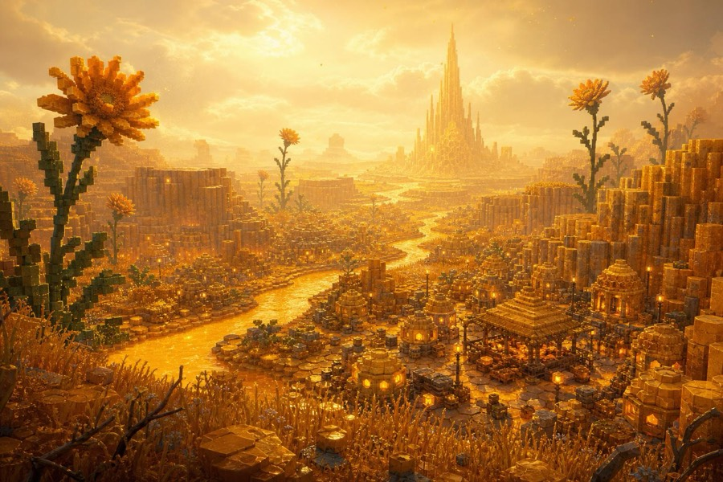
  <div class="in wide">
    <h1>Gates as Worlds</h1>
    <p class="sub">A gate stops being a line of rooms and becomes a whole land you walk into.</p>
    <p class="tag">PAINTING OF THE GOAL, NOT A SCREENSHOT</p>
  </div>
</header>

<main>
<div class="col" style="padding-top:42px">
  <p class="lead">You said gates still feel like hallways. They don't go up or down, you go left, right and back on your steps, and it's more of a maze than a place. And the first two gates you went into were both Hives.</p>
  <p>I walked every gate world with a measuring probe, and you're right. Two earlier rounds changed what the rooms look like and never touched the fact that they are rooms. So this plan changes the foundation.</p>
  <ul>
    <li>Each gate becomes a <strong>Realm</strong>: one unbroken land, 800 to 3,000 blocks across, with its own ground, plants, animals, villages, sky and physical rule.</li>
    <li>You arrive with a view. Something huge sits on the horizon and nothing tells you to go there. You can walk anywhere.</li>
    <li>No repeats. You never get the same Realm twice until you've seen every one open at your rank. A version of that fix ships first, in hours, on today's gates.</li>
    <li>I built a rough test in the real game: two whole lands from a throwaway generator. It proves the foundation works and what it costs. It can't prove they're fun, which is why the first finished Realm stops for you to play before anything else gets built.</li>
    <li>There are 14 yes-or-no decisions at the bottom.</li>
  </ul>
  <div class="pair" style="margin:6px 0 22px">
    <figure>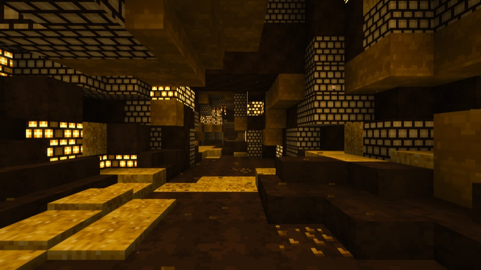<figcaption><strong>Today:</strong> where you arrive in a Hive.</figcaption></figure>
    <figure>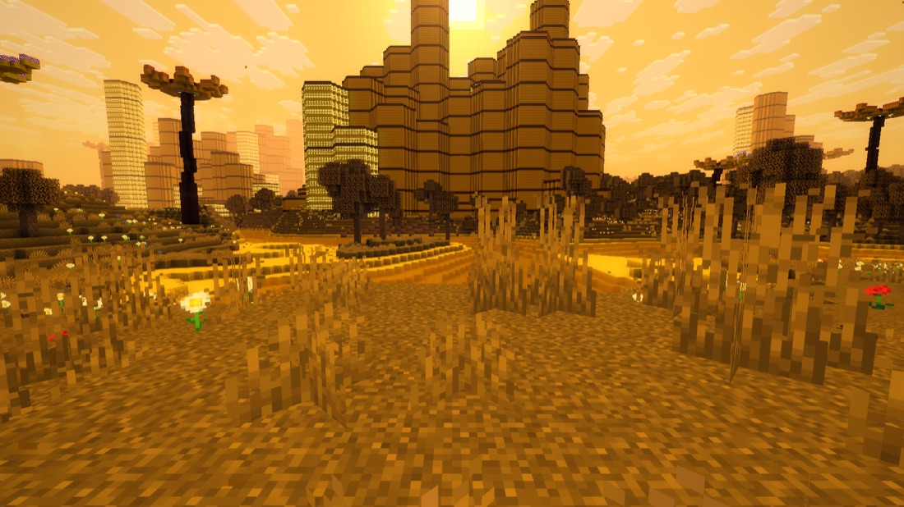<figcaption><strong>Rough proof, same game:</strong> open land with the great comb on the horizon. No art pass yet.</figcaption></figure>
  </div>
  <p class="key"><span class="t">Measured</span> I measured it, or read it in the code or your save. <span class="t r">Research</span> someone else's work, linked. <span class="t g">Guess</span> not proven yet. <span class="t p">Plan</span> what I'm proposing.</p>
  <nav class="toc" aria-label="Sections">
    <a href="#s1">1 What you asked for</a><a href="#s2">2 What's wrong today</a><a href="#s3">3 The options</a><a href="#s4">4 How it would work</a><a href="#s5">5 Before and after</a><a href="#s6">6 Testing and building it</a><a href="#s7">7 Your decisions</a>
  </nav>
</div>

<section id="s1"><div class="col">
  <p class="no">1</p>
  <h2>What you asked for</h2>
  <blockquote>"I really want to like push it to the maximum possible level where it feels like each gate is a world of its own... I don't want a maze. I want like immersive worlds with their own like style... imagine gates that had their own like village styles, their own ecosystem inside... each gate is completely different from the other. Right now there's not enough gates, and they're not good enough either."</blockquote>
  <h3>What I take that to mean</h3>
  <dl class="ch">
    <dt>The need</dt><dd>Step through a gate into somewhere you've never been, explore it because you want to, fight what lives there and come home with a story. Over the whole game, many hours of that.</dd>
    <dt>Not working</dt><dd>Walled routes, nothing to look at, no height, dead ends you walk back from, nothing alive, not enough gates, and repeats.</dd>
    <dt>Must hold</dt><dd>The server decides everything and it stays ready for a guild server one day. Bosses are found, never announced. Nothing fights for you. The System is the only guide. Every block has a recipe or a source. Progress shows on the Tasks page. Plain speech. No Mojang files in the public repo.</dd>
    <dt>Not in this</dt><dd>The overworld, Provings, the Ritual, the story's scripted gates, combat itself, quest lists, MMO servers.</dd>
  </dl>
  <h3>How we'll know it worked</h3>
  <p>The numbers are in section 6. The real test is you playing the first one and saying it feels like a world.</p>
</div>
<div class="wide"><div class="tw"><table class="mt">
  <thead><tr><th style="width:15%"></th><th>Strong</th><th>Weak</th><th>Unacceptable</th></tr></thead>
  <tbody>
    <tr><th>Usefulness</th><td>You want to keep exploring after the Lord is dead</td><td>Pretty land with nothing to do</td><td>Hallways dressed up as outdoors</td></tr>
    <tr><th>Correctness</th><td>All the ground you need can be reached, and fights work in the open</td><td>A few dead corners</td><td>Stuck with no way home, or a Lord you can't reach</td></tr>
    <tr><th>Effort</th><td>No map needed, and every walk has something on the way</td><td>Long empty stretches</td><td>Walking back through what you've already cleared</td></tr>
    <tr><th>Responsiveness</th><td>Land appears as you walk, same as the overworld</td><td>A short load at the entrance</td><td>A long wait to enter, or freezes as you fly</td></tr>
    <tr><th>Control</th><td>Any direction, any order, leave and come back</td><td>One obvious route through open land</td><td>Invisible walls and a forced order</td></tr>
    <tr><th>Reliability</th><td>Old saves and standing gates stay exactly as they are</td><td>A warning in the log now and then</td><td>A broken save</td></tr>
    <tr><th>Cost</th><td>Same frame rate and chunk speed as the overworld, and the disk comes back when a gate closes</td><td>About 10% slower</td><td>Frame rate collapses on your Mac, or the disk fills up</td></tr>
  </tbody>
</table></div></div>
</section>

<section id="s2"><div class="col">
  <p class="no">2</p>
  <h2>What's wrong today</h2>
  <p>I ran a probe over all 75 non-secret gate worlds, up to 8 layouts each, and read your own save. <span class="t">Measured</span></p>
</div>
<div class="wide">
  <div class="pair">
    <figure>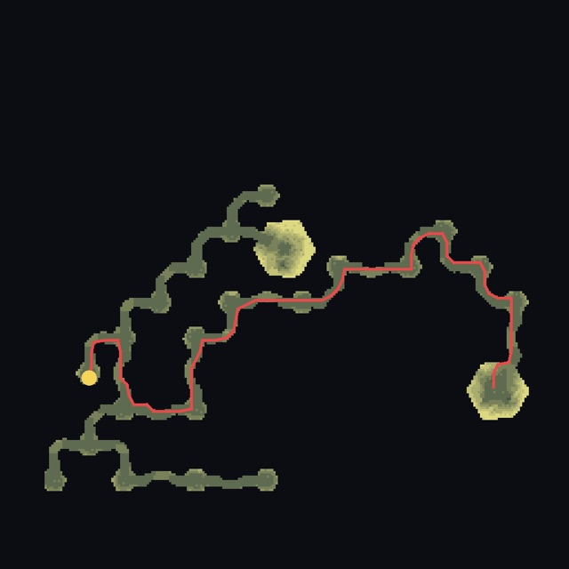<figcaption><strong>The Comb</strong>, a Hive world, from above.</figcaption></figure>
    <figure>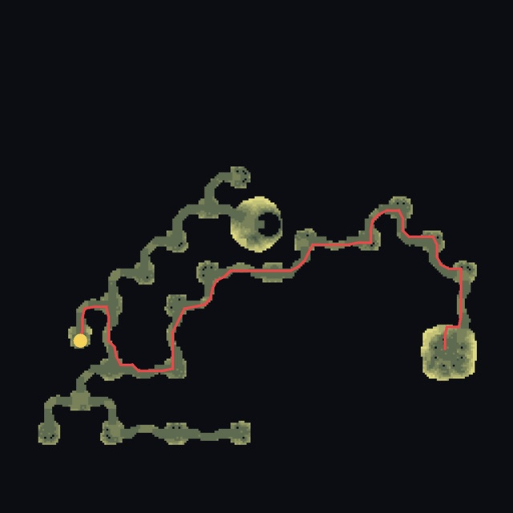<figcaption><strong>Jungle Courts</strong>, an Overgrown Temple world, same seed.</figcaption></figure>
  </div>
  <figcaption style="max-width:720px;margin-top:10px">Olive is every block you can ever stand on, black is solid, red is the way to the Lord. Two "completely different" worlds, one skeleton. Real gates use different seeds, but every one comes from this same family of layouts. <span class="t">Measured</span></figcaption>
</div>
<div class="col">
  <div class="pair" style="grid-template-columns:repeat(auto-fit,minmax(min(100%,220px),1fr))">
    <figure><figcaption><strong>The Comb</strong>, where you arrive.</figcaption></figure>
    <figure>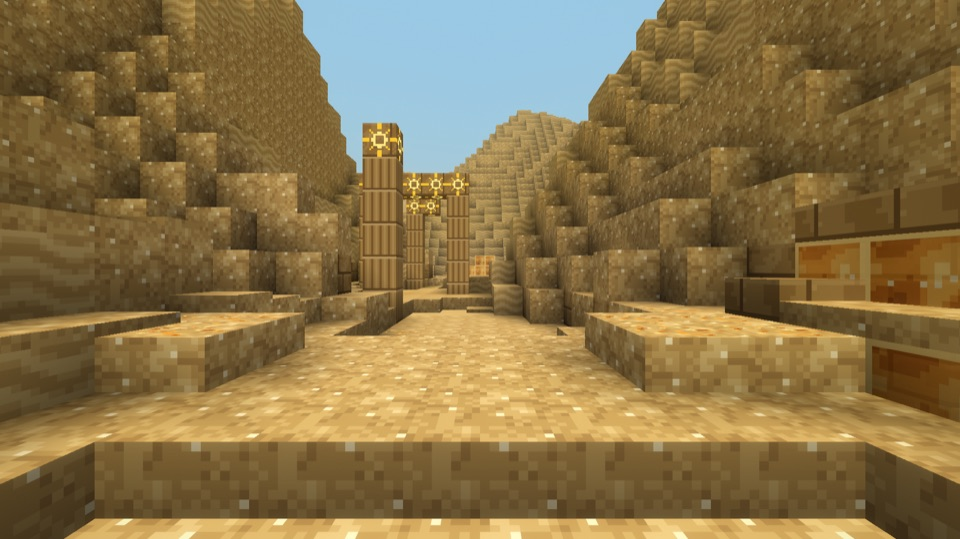<figcaption><strong>An "open" desert world.</strong> Sky above, but still a walled way.</figcaption></figure>
    <figure>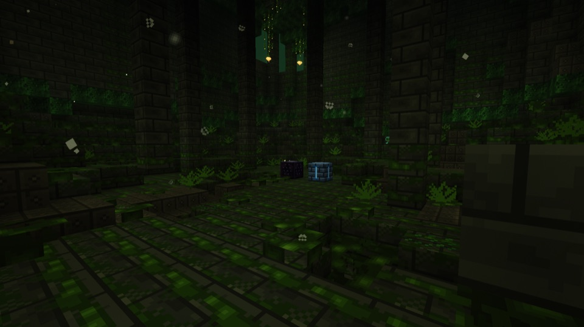<figcaption><strong>Overgrown Temple</strong>, a room along the way.</figcaption></figure>
  </div>
  <div class="bars" role="img" aria-label="Bars comparing today's gates to the overworld and the proof lands. Exact values are in the table below.">
    <div><h4>How far you can see at eye level (typical)</h4>
      <div class="b td"><span>Gates today</span><div class="tr"><i style="--v:0.15"></i><b>6 blocks</b></div></div>
      <div class="b"><span>Overworld</span><div class="tr"><i style="--v:0.80"></i><b>32</b></div></div>
      <div class="b"><span>Amber proof</span><div class="tr"><i style="--v:0.70"></i><b>28</b></div></div>
      <div class="b"><span>Cold Rift proof</span><div class="tr"><i style="--v:0.80"></i><b>32</b></div></div>
    </div>
    <div><h4>Height of the land, low to high</h4>
      <div class="b td"><span>Gates today</span><div class="tr"><i style="--v:0.04"></i><b>5 blocks</b></div></div>
      <div class="b"><span>Overworld</span><div class="tr"><i style="--v:0.38"></i><b>46</b></div></div>
      <div class="b"><span>Amber proof</span><div class="tr"><i style="--v:0.65"></i><b>78</b></div></div>
      <div class="b"><span>Cold Rift proof</span><div class="tr"><i style="--v:0.94"></i><b>113</b></div></div>
    </div>
  </div>
  <ul>
    <li>Half of your sightlines stop within <strong>6 blocks</strong>. None reach 64.</li>
    <li>The land's height changes by <strong>5 blocks</strong> across a whole floor.</li>
    <li><strong>Two-thirds</strong> of the walking is in passages 7 wide or less.</li>
    <li>If nothing stopped you, a floor is <strong>about a minute</strong> of walking.</li>
    <li>One door in five gets walked twice to see everything. That's the "back on your steps".</li>
    <li>The 21 worlds labelled "open" score the same as caves. They're trenches under an invisible lid 16 blocks up.</li>
  </ul>
  <h3>Your two Hives</h3>
  <p>Your save <code>New World (11)</code> shows it. You'd cleared two gates, both Hive. The game rolled six gates and remembers only the last three <em>rolled</em>, whether or not you went in. The three gates rolled between your two Hives, which you never entered, pushed Hive out of the memory, so it was allowed again. With only five themes open at E, this wasn't bad luck. It was going to keep happening. <span class="t">Measured</span></p>
  <h3>Why the last two rounds fell short</h3>
  <p>Gate Worlds and Gate Depth both changed the skin. Gate Worlds starts by laying out the same rooms any floor would use, then dresses each room as a place. The spec says so outright (38.5). Gate Depth then improved the ground, walls and roofs of those places. Their tests checked flatness, tidiness and detail, so they all passed while the thing you dislike stayed the same. Nobody measured how far you can see, how wide the way is, whether it climbs, or how much you walk twice. This plan measures exactly those.</p>
  <h3>Five cases I checked</h3>
</div>
<div class="wide"><div class="tw"><table class="mt">
  <thead><tr><th style="width:15%">Case</th><th style="width:28%">What I looked at</th><th>What I found</th></tr></thead>
  <tbody>
    <tr><th>Disappointing</th><td>Your two Hives, and the Comb and Brood Hall</td><td>Route 331 to 334 blocks, climbs 2 to 3 blocks, 71 to 74% in narrow ways, 23% of doors walked twice.</td></tr>
    <tr><th>Ordinary</th><td>The middle of all 75 worlds</td><td>Sight 6, height 5, route 329, 26 rooms, 2 dead ends. Most worlds sit close to this.</td></tr>
    <tr><th>Strong</th><td>The 5 floating isle worlds</td><td>Sight 88, and 61% of views reach 64 blocks. Today's gates can do a long view when walls don't block it, so the view isn't the hard part.</td></tr>
    <tr><th>Ambiguous</th><td>The plain and void worlds</td><td>Wide open, sight 60 to 66, and still only a list of rooms with nothing living in them. I think openness alone won't make a world. <span class="t g">Guess</span></td></tr>
    <tr><th>Failure</th><td>A world that can't be laid out</td><td>The game logs why and builds plain rooms instead (<code>FloorBuilder.java:156</code>). A good safety net, and Realms keep the idea.</td></tr>
  </tbody>
</table></div></div>
<div class="col">
  <h3>What's causing each complaint</h3>
</div>
<div class="wide"><div class="tw"><table class="mt2">
  <thead><tr><th>You feel</th><th>Cause</th><th>Evidence for</th><th>Evidence against</th><th>Smallest test</th><th>Fixing it</th></tr></thead>
  <tbody>
    <tr><th>Hallways</th><td>Places joined by one-slot links inside a 256-block plot</td><td>66% of walking is 7 wide or less</td><td>Void and plain are wide, but still a list of rooms</td><td>The probe</td><td>Big</td></tr>
    <tr><th>Doesn't go up or down</th><td>One floor line, and the way must never need a jump</td><td>Route height change, median 3</td><td>One "drop" world reaches 72</td><td>The probe</td><td>Big</td></tr>
    <tr><th>Back on your steps</th><td>Layouts are trees, with dead-end caches</td><td>21% of doors twice</td><td>Hub layouts shorten it but keep the tree</td><td>The probe</td><td>Medium</td></tr>
    <tr><th>A maze</th><td>Nothing in view to steer by, so no reason to pick a way</td><td>Sight 6, 0% far</td><td>Whether a view alone cures this is unproven</td><td>Play a Realm</td><td>Big</td></tr>
    <tr><th>Not alive</th><td>No decoration step at all, and monsters only exist as room groups</td><td><code>applyBiomeDecoration</code> is empty</td><td>Some particles exist, client side</td><td>Proof shots</td><td>Big</td></tr>
    <tr><th>Two Hives</th><td>Memory counts rolls, not visits, and the pool is small</td><td>Your save</td><td>None</td><td>Bag simulation</td><td>Certain</td></tr>
  </tbody>
</table></div></div>
<div class="col">
  <details>
    <summary>Every part of today's gate system, and what happens to it</summary>
    <div class="tw"><table class="mt">
      <thead><tr><th>Part</th><th>What it really does</th><th>Evidence</th><th>What that causes</th><th>Verdict</th></tr></thead>
      <tbody>
        <tr><td><code>Director.roll</code></td><td>Rank, then a theme not in the last 3 rolled, then a layout</td><td><code>Director.java:142</code></td><td>Unvisited gates use up the memory</td><td>Fix first</td></tr>
        <tr><td><code>Theme</code></td><td>15 themes, 5 open at E</td><td><code>Theme.java</code></td><td>A small pool</td><td>Keep as families</td></tr>
        <tr><td>Room programme</td><td>A tree of rooms, with caches and keys at dead ends</td><td><code>FloorBuilder.java:332</code></td><td>Walking back is built in</td><td>Keep for Delves, with loops</td></tr>
        <tr><td><code>Plots</code></td><td>256 by 256 for each floor</td><td><code>Plots.java</code></td><td>Everything must fit a small plot</td><td>Replaced in Realms</td></tr>
        <tr><td>Chains and caves</td><td>Places linked one after another; 55 of 90 recipes are caves</td><td>Recipe count</td><td>One skeleton, many skins</td><td>Keep for Delves</td></tr>
        <tr><td>Lid on open lands</td><td>Invisible barrier 16 above the floor</td><td><code>CaveEngine.java:109</code></td><td>"Open" means roofed trench</td><td>Not used in Realms</td></tr>
        <tr><td><code>WorldCheck</code></td><td>Tests flatness, plumb and detail</td><td>SPEC 38.5, 38.14</td><td>Green tests, disappointing play</td><td>Add the shape tests</td></tr>
        <tr><td>Gate generator</td><td>No features, ever</td><td><code>GateChunkGenerator.java:139</code></td><td>No overworld ground can reach a gate</td><td>New generator</td></tr>
        <tr><td>Wildness</td><td>Overworld only</td><td><code>Wildness.java:65</code></td><td>No wild system in gates</td><td>Add a Realm version</td></tr>
        <tr><td>Herds ledger</td><td>Lives on the overworld</td><td><code>Ledger.java:177,363</code></td><td>No herds in gates</td><td>One ledger per Realm</td></tr>
        <tr><td>Village planners</td><td>4,185 lines of planners and painters</td><td><code>village/plan</code></td><td>Villages exist, overworld only</td><td>Reuse with kits</td></tr>
        <tr><td>Far Sight</td><td>Needs an overworld sky</td><td><code>FarCollector.java:99</code></td><td>No far land in gates</td><td>Extend after the pilots</td></tr>
        <tr><td>Lens, Gate Air</td><td>Looks by biome</td><td><code>looks_gates.json</code></td><td>Grows naturally with Realms</td><td>Reuse</td></tr>
        <tr><td>Break clock, Satchel, bells, Goals</td><td>Work on the gate record and items</td><td>SPEC 7, 43.16</td><td>Don't care what shape a gate is</td><td>Keep</td></tr>
      </tbody>
    </table></div>
  </details>
  <details>
    <summary>Outside research this leans on</summary>
    <div class="tw"><table class="mt2">
      <thead><tr><th>Claim</th><th>Source (read 9 Nov 2026)</th><th>Fits us because</th><th>Limits</th><th>So we</th><th>Checked here by</th></tr></thead>
      <tbody>
        <tr><td>Variety only counts if players notice it and it changes what they do ("10,000 bowls of oatmeal")</td><td><a href="https://gamedeveloper.com/design/practical-procedural-generation-for-everyone-">Compton</a>, <a href="https://arxiv.org/pdf/2305.02131v1.pdf">Rabii &amp; Cook, FDG 2023</a></td><td>Why 90 recipes felt the same</td><td>About generators in general</td><td>Test six kinds of difference, not skins</td><td>The difference test, then you</td></tr>
        <tr><td>Landmarks pull players across open land, and hills hide then reveal them</td><td><a href="https://gist.github.com/idbrii/e39fe96279aa1670319bfa521d907399">BotW, CEDEC 2017, translated</a>, <a href="https://gmtk.substack.com/p/how-nintendo-solved-zeldas-open-world">GMTK</a></td><td>Replaces the route</td><td>A hand-built world</td><td>Require a landmark and long sightlines</td><td>Sightline targets, then playing it</td></tr>
        <tr><td>Loops and shortcuts beat trees in dungeons</td><td><a href="https://www.gamedeveloper.com/design/unexplored-s-secret-cyclic-dungeon-generation-">Dormans</a>, <a href="https://www.boristhebrave.com/2021/04/10/dungeon-generation-in-unexplored/">Boris the Brave</a></td><td>Ends walking back</td><td>2D games</td><td>Make loops a rule for Delves</td><td>Doors walked twice</td></tr>
        <tr><td>One seamless land with a food chain makes a hunting ground feel alive</td><td><a href="https://www.invenglobal.com/articles/6549/creating-a-dense-open-world-a-lecture-from-yuya-tokuda-the-director-for-monster-hunter-world">Tokuda on Monster Hunter World</a></td><td>The ecosystem you asked for</td><td>A large studio</td><td>Few animals, each with habits</td><td>A tour, then you</td></tr>
        <tr><td>Long-running looping interiors feel like places</td><td><a href="https://gameinformer.com/preview/2021/08/27/elden-rings-first-legacy-dungeon-is-stormveil-castle">Game Informer on Stormveil</a></td><td>Delves</td><td>Hand-built</td><td>Hero pieces can be hand-made</td><td>The first Delve</td></tr>
        <tr><td>A boss-progress dimension works in Minecraft</td><td><a href="https://blog.curseforge.com/best-minecraft-boss-mods/">Twilight Forest</a></td><td>Leaving and coming back</td><td>One world, one look</td><td>Mouth and Waystones</td><td>Leave-and-return test</td></tr>
        <tr><td>Zones feel lived in through settlements with their own look</td><td><a href="https://warcraft.wiki.gg/wiki/Zone">Warcraft zones</a></td><td>Your own comparison</td><td>MMO scale</td><td>Village kits per Realm</td><td>You, in the pilot</td></tr>
      </tbody>
    </table></div>
  </details>
</div>
</section>

<section id="s3"><div class="col">
  <p class="no">3</p>
  <h2>The options</h2>
  <p>The first three are real ways of building this. The fourth I'd use only for special pieces.</p>
</div>
<div class="wide"><div class="tw"><table class="mt2">
  <thead><tr><th style="width:17%"></th><th>A. Repair the floors</th><th style="color:var(--accent)">B. Realms (what I recommend)</th><th>C. Vanilla terrain, a new dimension per gate</th><th>D. Hand-built maps</th></tr></thead>
  <tbody>
    <tr><th>What it is</th><td>Loops, wider links, more recipes, the repeat fix</td><td>One unbroken land per gate, from our own generator</td><td>Noise settings per gate, with a new level for each</td><td>Saved structures</td></tr>
    <tr><th>Feels like a world</th><td>No, still rooms</td><td>Yes</td><td>Partly: natural but generic</td><td>Yes, best per world</td></tr>
    <tr><th>Each completely different</th><td>No</td><td>Yes: own landform programs and kits</td><td>No: one engine's look</td><td>Yes</td></tr>
    <tr><th>Up, down, far views</th><td>A little</td><td>Fully</td><td>Fully</td><td>Fully</td></tr>
    <tr><th>Can reach 60 to 100</th><td>Yes, as skins</td><td>Yes, in waves</td><td>Yes, all alike</td><td>No</td></tr>
    <tr><th>Cost on your Mac</th><td>Same as today</td><td>Measured so far: cheaper per chunk than the overworld</td><td>Each level ticks and holds memory</td><td>Small</td></tr>
    <tr><th>Risk</th><td>Low</td><td>Medium</td><td>High: NeoForge doesn't support adding dimensions while running</td><td>Scope</td></tr>
    <tr><th>Keeps</th><td>Everything</td><td>Blocks, fights, loot, Lens, ground, villages, old worlds as Delves</td><td>Little</td><td>Little</td></tr>
  </tbody>
</table></div></div>
<div class="col">
  <p><strong>I recommend B</strong>, and shipping A's repeat fix first because it's cheap and doesn't depend on anything else. <span class="t p">Plan</span> The loop stays: rank, Break clock, Satchel, Lord, bells. Floors stop being the shape of a gate and live on as interiors. Yes, this throws away the idea that a gate is a sequence of floors. Two rounds of building on that idea is the evidence it can't get you what you described.</p>
  <p><strong>What would change my mind:</strong> you play the first Realm and it doesn't feel like a world; chunks cost more than 1.5 times the overworld's; or a Realm at the full bar takes too long to make. Any of those and we stop before more gets built.</p>
</div>
</section>

<section id="s4"><div class="col">
  <p class="no">4</p>
  <h2>How it would work</h2>
  <p class="lead">One gate, one land. You come in at the Mouth, which is always your way home, and from there nothing is decided for you.</p>
  <ul>
    <li><strong>The pull.</strong> From the Mouth you can see one enormous thing far away. Nothing names it or points at it.</li>
    <li><strong>The land.</strong> No route. Villages, ruins, dens, caves, hidden finds. Walk, climb, jump off things.</li>
    <li><strong>The great creatures.</strong> Three to five hold the land and can be taken in any order. Beat enough of them and the heart opens. Nothing announces this.</li>
    <li><strong>The Lord.</strong> Inside the great thing, in a real arena, same bell and loot and Satchel as today.</li>
    <li><strong>Delves.</strong> The interiors. Caves, crypts and halls built with today's engines, but looped, with shortcuts, carved into the same land with no loading.</li>
    <li><strong>Waystones.</strong> At villages and the Mouth. They take you between ones you've reached, and they bank your Satchel.</li>
    <li><strong>How big.</strong> E is 800 across, D 1,000, C 1,300, B 1,600, A 2,000, S 2,400, Sovereign 3,000.</li>
    <li><strong>How long.</strong> About an hour to see most of an E Realm, several hours at S. Over 60 Realms, that's roughly 90 hours for a first time through each. <span class="t g">Guess</span> We'll time it on your first pilot.</li>
  </ul>
  <figure>
    <svg viewBox="0 0 640 310" role="img" aria-label="To scale: today's gate floor plot is 256 blocks wide; an E Realm is 800 across; an S Realm is 2,400 across" style="width:100%;height:auto;color:var(--ink)">
      <circle cx="170" cy="155" r="150" fill="none" stroke="currentColor" stroke-width="1.5"/>
      <circle cx="170" cy="155" r="50" fill="var(--bar-new)" fill-opacity=".35" stroke="var(--bar-new)" stroke-width="2"/>
      <rect x="162" y="147" width="16" height="16" fill="var(--bar-today)"/>
      <line x1="178" y1="155" x2="370" y2="82" stroke="currentColor" stroke-width="1" opacity=".55"/>
      <line x1="218" y1="130" x2="370" y2="155" stroke="currentColor" stroke-width="1" opacity=".55"/>
      <line x1="297" y1="235" x2="370" y2="228" stroke="currentColor" stroke-width="1" opacity=".55"/>
      <text x="376" y="77" font-size="16" font-weight="600" fill="currentColor">Today's gate floor</text>
      <text x="376" y="97" font-size="14" fill="currentColor" opacity=".72">256 across, 6% of it walkable</text>
      <text x="376" y="150" font-size="16" font-weight="600" fill="currentColor">An E Realm</text>
      <text x="376" y="170" font-size="14" fill="currentColor" opacity=".72">800 across, all of it land</text>
      <text x="376" y="223" font-size="16" font-weight="600" fill="currentColor">An S Realm</text>
      <text x="376" y="243" font-size="14" fill="currentColor" opacity=".72">2,400 across</text>
    </svg>
    <figcaption>All three drawn to the same scale.</figcaption>
  </figure>

  <h3>What makes each one completely different</h3>
  <p>Two Realms must differ on at least four of six things: the <strong>shape of the land</strong>, the <strong>sky and light</strong>, the <strong>living things</strong>, the <strong>people and buildings</strong>, a <strong>physical rule</strong>, and the <strong>great thing at its heart</strong>. A test fails the build if any two are too alike. That's the answer to "ten skins of the same place". Here are six. <span class="t p">Plan</span></p>
</div>
<div class="wide">
  <article class="world"><div><h4>Amber Reach</h4><p class="fam">Hive family &middot; E &middot; painting of the goal</p><dl>
    <dt>Land</dt><dd>Golden hills, amber rivers, six-sided mesas</dd>
    <dt>Light</dt><dd>Late afternoon, always</dd>
    <dt>Life</dt><dd>Pollen grazers, stinger swarms, amberflies</dd>
    <dt>People</dt><dd>Wax-folk in round comb villages</dd>
    <dt>Rule</dt><dd>Warm updrafts lift you; honey slows you</dd>
    <dt>Heart</dt><dd>The Mother Comb, a mountain-sized hive</dd></dl></div></article>
  <article class="world">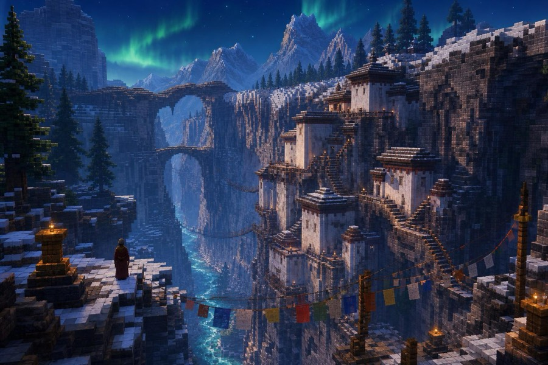<div><h4>Cold Rift</h4><p class="fam">Frost Monastery family &middot; C &middot; painting of the goal</p><dl>
    <dt>Land</dt><dd>Snow plateau split by a mile-long gorge</dd>
    <dt>Light</dt><dd>Hard white day, blue shadow, cloud below you</dd>
    <dt>Life</dt><dd>Goat-herds on the terraces, rift-eagles</dd>
    <dt>People</dt><dd>Chanting monks in a monastery hung over the drop</dd>
    <dt>Rule</dt><dd>Cold bites in the wind, shelter stops it</dd>
    <dt>Heart</dt><dd>The bell tower at the far end of the rope road</dd></dl></div></article>
  <article class="world">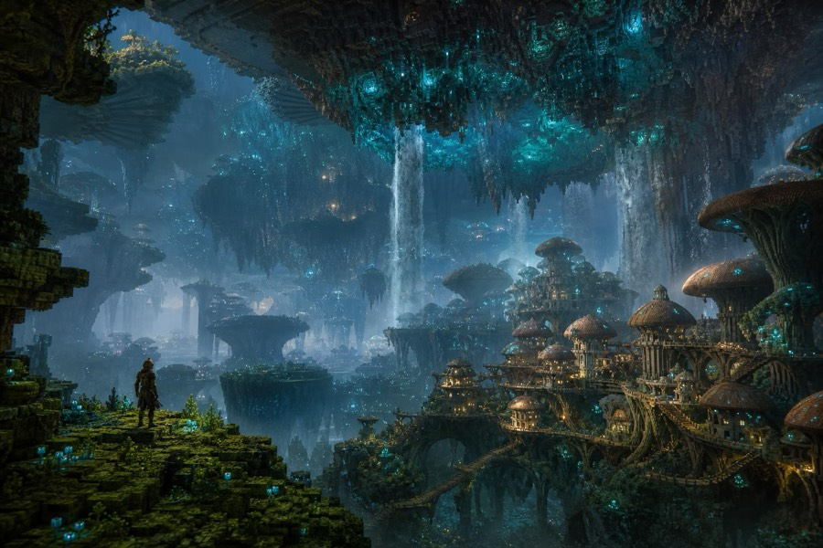<div><h4>Hollow Reach</h4><p class="fam">Fungal Hollow family &middot; E &middot; painting of the goal</p><dl>
    <dt>Land</dt><dd>A vast cavern with a second land on its ceiling</dd>
    <dt>Light</dt><dd>No sun; glowing fungus by the mile</dd>
    <dt>Life</dt><dd>Spore grazers, things that hang and drop</dd>
    <dt>People</dt><dd>Lamp-keepers in mushroom-stem towers</dd>
    <dt>Rule</dt><dd>Spore vents throw you upward</dd>
    <dt>Heart</dt><dd>A stalk that joins the floor to the ceiling</dd></dl></div></article>
  <article class="world">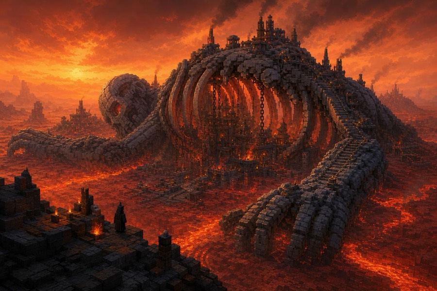<div><h4>Titan's Rest</h4><p class="fam">Ember Mines family &middot; E &middot; painting of the goal</p><dl>
    <dt>Land</dt><dd>Ash hills across a giant's fallen body</dd>
    <dt>Light</dt><dd>Red dusk under smoke</dd>
    <dt>Life</dt><dd>Ash-beetles, scavengers on the carcass</dd>
    <dt>People</dt><dd>A forge town built inside the ribcage</dd>
    <dt>Rule</dt><dd>Fire spreads across dry ash</dd>
    <dt>Heart</dt><dd>The giant's still-warm chest</dd></dl></div></article>
  <article class="world">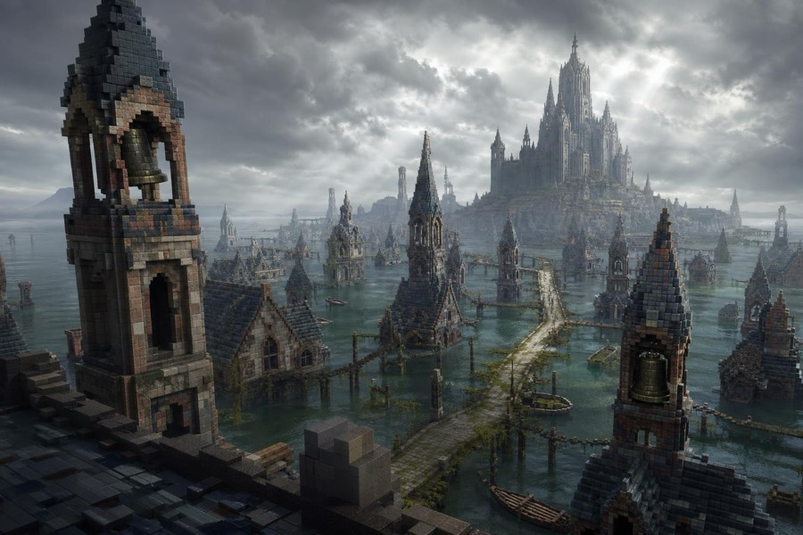<div><h4>Bellmere</h4><p class="fam">Bell Crypt family &middot; E &middot; painting of the goal</p><dl>
    <dt>Land</dt><dd>A sunken town and tidal flats</dd>
    <dt>Light</dt><dd>Grey-green rain light</dd>
    <dt>Life</dt><dd>Eels in the streets, wading birds</dd>
    <dt>People</dt><dd>Stilt-walkers who ring the hours</dd>
    <dt>Rule</dt><dd>The tide opens and floods streets</dd>
    <dt>Heart</dt><dd>The great bell under the water</dd></dl></div></article>
  <article class="world">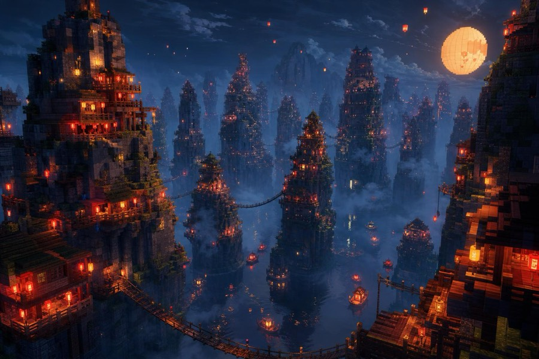<div><h4>Lantern Karst</h4><p class="fam">Lantern Night Market family &middot; D &middot; painting of the goal</p><dl>
    <dt>Land</dt><dd>Limestone pillars above a dark forest</dd>
    <dt>Light</dt><dd>Permanent night, thousands of lanterns</dd>
    <dt>Life</dt><dd>Moths, gliders, pale deer below</dd>
    <dt>People</dt><dd>Market-folk who live on the rope bridges</dd>
    <dt>Rule</dt><dd>Light keeps certain things away</dd>
    <dt>Heart</dt><dd>The tallest pillar, where the market ends</dd></dl></div></article>
</div>
<div class="col">
  <h3>Others on the list</h3>
  <ul class="more">
    <li><strong>Sunken Canopy</strong>: treetop villages over a dark swamp</li>
    <li><strong>Glass Sea</strong>: dunes, sand-sled nomads, a colossus half buried</li>
    <li><strong>Terraced Valley</strong>: stepped farms climbing a green bowl</li>
    <li><strong>Mangrove Delta</strong>: a hundred channels and stilted homes</li>
    <li><strong>Cloud Sea</strong>: peaks above cloud, ferries on the wind</li>
    <li><strong>Drained Sea</strong>: hull villages and whale bones</li>
    <li><strong>The Ring</strong>: a volcano ring around a burning lake</li>
    <li><strong>The Spiral</strong>: one mountain, one road winding up it</li>
    <li><strong>Moth Crater</strong>: a soft-lit bowl that moves at dusk</li>
    <li><strong>Clockwork Plain</strong>: the land rotates on great gears</li>
    <li><strong>Archive of Salt</strong>: stacks of white crystal under the sea</li>
    <li><strong>The Stopped City</strong>: a whole city at one frozen instant</li>
    <li><strong>Frozen Sea</strong>: walk over the ice, see what's beneath</li>
    <li><strong>Giant's Garden</strong>: everything many times your size</li>
    <li><strong>Mirror Reach</strong>: a land with a sky that is itself</li>
    <li><strong>The House</strong>: one vast house that rearranges itself</li>
    <li><strong>The Last Shore</strong>: a beach at the end of everything</li>
    <li><strong>Precursor Array</strong>: a plain of machines still running</li>
    <li><strong>Orrery Moons</strong>: small moons, low gravity, jump between them</li>
  </ul>

  <h3>The repeat fix</h3>
  <p>Each player gets a shuffle bag of every Realm open at their rank. Rolling a gate <strong>reserves</strong> one, so no two standing gates are the same. Going in marks it <strong>seen</strong>. A gate that closes unentered goes back in the bag. Nothing repeats until the bag is empty, and it refills oldest first, in a different mood. Phase 0 applies the same rule to today's themes and worlds before any Realm exists. <span class="t p">Plan</span></p>

  <h3>Each big change, argued</h3>
  <details open><summary>The repeat fix</summary><dl class="ch">
    <dt>Evidence</dt><dd>Your save: gates you never entered pushed Hive out of the memory, so it came back. Only five themes are open at E.</dd>
    <dt>Change</dt><dd>A bag per player: reserved when rolled, seen when entered, returned if it closes unentered.</dd>
    <dt>Benefit</dt><dd>You stop meeting the same place twice.</dd>
    <dt>Keeps</dt><dd>Rank odds, twists, modifiers and pity counters.</dd>
    <dt>Tradeoff</dt><dd>One small change to what each player's save remembers.</dd>
    <dt>Test</dt><dd>10,000 simulated players, no repeat until the bag is empty.</dd>
  </dl></details>
  <details><summary>Gates become one continuous land</summary><dl class="ch">
    <dt>Evidence</dt><dd>Sight 6, height 5, 66% narrow, one skeleton under every world.</dd>
    <dt>Change</dt><dd>New generator and dimensions: land by height functions, set pieces, and the game's real decoration.</dd>
    <dt>Benefit</dt><dd>Views, height and a land you pick your own way through.</dd>
    <dt>Keeps</dt><dd>Rank, Break clock, Satchel, Lords, fights, loot, all old saves.</dd>
    <dt>Tradeoff</dt><dd>A big new system. Each Realm needs a lot of art to reach the bar.</dd>
    <dt>Test</dt><dd>The probe's targets, and you playing it.</dd>
  </dl></details>
  <details><summary>Ground, wildness and plants come from the overworld's systems</summary><dl class="ch">
    <dt>Evidence</dt><dd>Your words, "it has twigs, it has stones". Gates have no decoration step at all.</dd>
    <dt>Change</dt><dd>Realms run the real pipeline with Soft Land features, each with its own kit, and wildness per Realm.</dd>
    <dt>Benefit</dt><dd>The same sense of life as the overworld, with its own look.</dd>
    <dt>Keeps</dt><dd>Everything tested in the overworld.</dd>
    <dt>Tradeoff</dt><dd>More chunk work than today's gates; measured below.</dd>
    <dt>Test</dt><dd>Pebbles, twigs, boulders and growth per 100 columns at least 80% of the overworld's.</dd>
  </dl></details>
  <details><summary>Animals that live there, not room monsters</summary><dl class="ch">
    <dt>Evidence</dt><dd>Herds only run in the overworld, and gate monsters only exist as room groups.</dd>
    <dt>Change</dt><dd>A ledger per Realm, a small cast with habits, and predators that hunt grazers. The land reacts as great creatures fall.</dd>
    <dt>Benefit</dt><dd>An ecosystem you can read and disturb.</dd>
    <dt>Keeps</dt><dd>Existing herd and pack brains, and the 60-creature combat budget.</dd>
    <dt>Tradeoff</dt><dd>New mobs per Realm are art work; reuse where possible.</dd>
    <dt>Test</dt><dd>Animals in view within 60 seconds from any spot; server tick budget held.</dd>
  </dl></details>
  <details><summary>People and villages of their own</summary><dl class="ch">
    <dt>Evidence</dt><dd>You asked for village styles. Our planners and citizens already exist.</dd>
    <dt>Change</dt><dd>Non-human natives per Realm, with their own building kit. They trade and you overhear them, in words the System translates.</dd>
    <dt>Benefit</dt><dd>Places that feel lived in, like a WoW zone.</dd>
    <dt>Keeps</dt><dd>No people outside Carillon in your own world; no allies; no quests from them; the System stays the only guide.</dd>
    <dt>Tradeoff</dt><dd>Decision 4 is yours: this leans on your rule about people.</dd>
    <dt>Test</dt><dd>Villages generate clean; no goals ever come from a person.</dd>
  </dl></details>
  <details><summary>A physical rule per Realm</summary><dl class="ch">
    <dt>Evidence</dt><dd>Variety only counts if it changes what you do (research above).</dd>
    <dt>Change</dt><dd>One rule from a small kit: tide, cold, wind, updrafts, darkness, fire spread, moving land, low gravity.</dd>
    <dt>Benefit</dt><dd>You play each Realm differently, not just look at it differently.</dd>
    <dt>Keeps</dt><dd>Modifiers, which still apply on top.</dd>
    <dt>Tradeoff</dt><dd>Each rule is real code with edge cases.</dd>
    <dt>Test</dt><dd>One test per rule, plus a play check at each pilot.</dd>
  </dl></details>
  <details><summary>Today's 90 worlds become Delves, with loops</summary><dl class="ch">
    <dt>Evidence</dt><dd>21% of doors walked twice, and tree layouts. But those engines make good interiors.</dd>
    <dt>Change</dt><dd>Recast them as caves, crypts and halls inside Realms, each with a loop and a shortcut.</dd>
    <dt>Benefit</dt><dd>None of that work is wasted, and interiors stop being dead ends.</dd>
    <dt>Keeps</dt><dd>Blocks, recipes, puzzles, bosses' arenas.</dd>
    <dt>Tradeoff</dt><dd>Some recipes won't fit and get cut.</dd>
    <dt>Test</dt><dd>At most 5% of doors walked twice.</dd>
  </dl></details>
  <details><summary>Waystones replace Rest Shrines</summary><dl class="ch">
    <dt>Evidence</dt><dd>A Realm takes far longer than a floor, so the Satchel stake and walking back need a release.</dd>
    <dt>Change</dt><dd>Fast travel between stones you've reached on foot, and banking your Satchel at them.</dd>
    <dt>Benefit</dt><dd>No trudging back, and an hour's run isn't lost to one death.</dd>
    <dt>Keeps</dt><dd>The Satchel stake between stones.</dd>
    <dt>Tradeoff</dt><dd>Softens the risk of the Satchel. Decision 6 is yours.</dd>
    <dt>Test</dt><dd>Satchel tests, plus a stone reachable from every site.</dd>
  </dl></details>

  <h3>The rules underneath</h3>
  <details><summary>What the game does, step by step</summary>
    <dl class="ch">
      <dt>Trigger</dt><dd>A player enters a Realm gate.</dd>
      <dt>Inputs</dt><dd>Gate record: blueprint, rank, seed, mood, version.</dd>
      <dt>Work</dt><dd><code>RealmPlan.of(...)</code> is a pure calculation that places the Mouth, rivers, villages, sites and hero pieces. Chunks are then made on demand: height from the landform, set pieces clipped per chunk, then the real decoration.</dd>
      <dt>Output</dt><dd>Ordinary chunks in <code>awaken:realms</code> or <code>awaken:realms_dark</code> (height 384).</dd>
      <dt>Actions</dt><dd>Enter, leave by Mouth or Waystone, die, clear.</dd>
      <dt>Saved</dt><dd><code>RealmState</code> per gate, with a schema version: sites taken, great creatures down, village state, the ecosystem ledger. <code>GateMemory</code> gains <code>seen</code> and <code>reserved</code>.</dd>
      <dt>Lifecycle</dt><dd>Made at roll, kept while the gate stands, deleted with the gate. Cells at 8,192 pitch, erased by the existing recycler. Content version 10; entered gates keep their old version; server flag <code>gateRealms</code>, off until phase 4.</dd>
      <dt>Failure</dt><dd>Every failure falls back to a working state; see the table below.</dd>
    </dl>
    <p style="margin-top:12px"><strong>Always true:</strong> there's always a way home. All needed ground is reachable with the movement you have at that rank (a test proves it). Nothing is announced. No repeats until the bag is empty. Old gates keep working as they were. One Satchel per player. One Realm per gate, so a party shares it.</p>
    <pre style="font:400 12.5px/1.5 'IBM Plex Mono',monospace;background:var(--shade);padding:12px;overflow-x:auto;border-radius:4px;margin:0">{ "schemaVersion": 1, "id": "awaken:amber_reach", "family": "hive", "ranks": ["E","D"],
  "land": { "program": "awaken:honey_highlands", "water": 62, "params": { "mesas": 0.4 } },
  "sky": { "biomes": ["amber_meadow","comb_heights"], "lens": "amber_reach", "sun": 60 },
  "ground": { "kit": "soft_land_amber", "wild_max": 0.9 },
  "life": { "herds": ["pollen_grazer"], "predators": ["stinger_swarm"], "ambient": ["amberfly"] },
  "folk": { "kit": "wax_folk", "villages": [1,3] },
  "law": { "kind": "updrafts", "honey_slows": 0.6 },
  "sites": { "wardens": [3,4], "delves": 2, "finds": 40 },
  "heart": { "lord": "hive_regent", "seat": "mother_comb" },
  "moods": ["late_harvest","swarming","wax_moon"] }</pre>
  </details>
  <details><summary>How Realms meet everything else in the game</summary>
    <div class="tw"><table><thead><tr><th>System</th><th>What happens</th></tr></thead><tbody>
      <tr><td>Break clock</td><td>Unchanged, already held while someone's inside</td></tr>
      <tr><td>Satchel, Spoils</td><td>Unchanged, plus banking at Waystones (decision 6)</td></tr>
      <tr><td>Bells</td><td>A Lord's own bell and swallowed bells unchanged; each world's bell moves to a Realm or Delve</td></tr>
      <tr><td>Provings, Ritual, story gates</td><td>Stay on built rooms</td></tr>
      <tr><td>Twists</td><td>Double: an inner Realm. Red: the Mouth seals until the Lord dies. The rest happen at sites</td></tr>
      <tr><td>Modifiers</td><td>Apply to creatures as today; some suit certain rules</td></tr>
      <tr><td>Fights and 41 bosses</td><td>Lords and great creatures reuse them; arenas are set pieces</td></tr>
      <tr><td>Lens and Gate Air</td><td>One look per Realm biome</td></tr>
      <tr><td>Time of day</td><td>Each Realm has one fixed light, set by its biome; no day and night inside</td></tr>
      <tr><td>Far Sight</td><td>Heights are cheap to read; added after the pilots (decision 12)</td></tr>
      <tr><td>Atlas, Journal</td><td>A Realm page, drawn in as you find places</td></tr>
      <tr><td>Tasks page</td><td>Realm steps register on it, without naming anything you haven't found</td></tr>
      <tr><td>Journey ledger</td><td>Every new block and item declared with a recipe or source</td></tr>
      <tr><td>Multiplayer</td><td>One Realm per gate, shared by the party; chunks only where people are</td></tr>
    </tbody></table></div>
  </details>
  <details><summary>What can go wrong, and what happens if it does</summary>
    <div class="tw"><table class="mt2"><thead><tr><th>Case</th><th>How it's caught</th><th>Contained by</th><th>Kept</th><th>What you see</th><th>Recovery</th><th>Test</th></tr></thead><tbody>
      <tr><td>A blueprint won't load</td><td>At startup</td><td>That Realm is disabled, logged</td><td>All others</td><td>Other Realms roll</td><td>Fix the data</td><td><code>realm_blueprints_parse</code></td></tr>
      <tr><td>Nothing open at this rank</td><td>Bag empty</td><td>Roll a floors gate</td><td>Progress</td><td>A normal gate</td><td>Add Realms</td><td><code>realm_bag_empty</code></td></tr>
      <tr><td>A chunk throws while painting</td><td>Caught and logged</td><td>Chunk left as built</td><td>The Realm</td><td>A rough patch you can walk round</td><td>Bug report</td><td><code>realm_no_holes</code></td></tr>
      <tr><td>Mouth lands somewhere bad</td><td>Plan check</td><td>Moved to the nearest good spot</td><td>Seed</td><td>Nothing</td><td>Automatic</td><td><code>realm_mouth_safe</code></td></tr>
      <tr><td>Land cut off</td><td>Flood fill at plan time</td><td>A ford, bridge or stairs is added</td><td>Seed</td><td>A way across</td><td>Automatic</td><td><code>realm_all_reachable</code></td></tr>
      <tr><td>Party splits, one leaves</td><td>As today</td><td>Realm stands for the others</td><td>Satchels</td><td>Nothing odd</td><td>Rejoin by gate</td><td><code>realm_party_split</code></td></tr>
      <tr><td>Die far from home</td><td>As today</td><td>Satchel stake as today</td><td>Banked loot</td><td>Respawn</td><td>Walk or Waystone</td><td>Existing Spoils tests</td></tr>
      <tr><td>An update mid-run</td><td>Content version</td><td>Old gates stay on their version</td><td>The save</td><td>Nothing</td><td>Flag off if needed</td><td><code>realm_flag_off_rolls_floors</code></td></tr>
      <tr><td>Weak Mac</td><td>Frame budget</td><td>Shorter view, closer fog</td><td>Play</td><td>Less distance</td><td>Settings</td><td>Perf tour</td></tr>
    </tbody></table></div>
  </details>
  <details><summary>Ownership, cost and how we'd see inside it</summary>
    <p><strong>Ownership.</strong> Realm data lives only in the world save. Nothing leaves your machine. On a future server, its owner holds it. The repo is public, so no Mojang files; textures come from our art pipeline and sounds are made by us or CC0, with any CC0 list shown to you first. The paintings here came from an image model and are for this page only.</p>
    <p><strong>Cost.</strong> Chunk generation no worse than the overworld on the same machine. Frame rate no worse than the overworld at the same settings. The spec's gate-fight target stands. A fully walked E Realm under 40 MB, erased when the gate closes.</p>
    <p><strong>Seeing inside.</strong> <code>/awaken realm info</code> shows the blueprint, seed, plan and live chunk cost. Any slow chunk is logged. The shape probe runs in CI on every Realm. Tours take shots of each pilot.</p>
  </details>
</div>
</section>

<section id="s5"><div class="col">
  <p class="no">5</p>
  <h2>Before and after</h2>
  <h3>An ordinary gate, at E</h3>
</div>
<div class="wide"><div class="tw"><table class="ba">
  <thead><tr><th style="width:15%"></th><th>Today</th><th style="color:var(--accent)">With Realms</th></tr></thead><tbody>
  <tr><th>You do</th><td>Step into a Hive gate.</td><td>Step into a gate.</td></tr>
  <tr><th>The game gets</th><td>Rank, theme, seed. It lays out the same room list any floor would use.</td><td>Rank, the Realm from your bag, a seed. It works out the rivers, villages and where the Mouth is.</td></tr>
  <tr><th>What changes</th><td>Three to six floors get carved, each in a 256-block plot. Nothing grows.</td><td>Nothing waits. Land appears as you walk, with twigs, pebbles, boulders and wild plants.</td></tr>
  <tr><th>You get</th><td>A tunnel 5 wide and six blocks of sight.</td><td>You're on a high shelf. A valley, a river, smoke from a wax village, and far off the Mother Comb, big as a mountain.</td></tr>
  <tr><th>You do next</th><td>Left, right, clear a room, hit a dead end, walk back.</td><td>Whatever you want. Down to the village, along the river, or straight at the Comb.</td></tr>
  <tr><th>Why it's less work</th><td></td><td>You never have to work out the route. You pick what looks good and the land shows you the next thing.</td></tr>
</tbody></table></div></div>
<div class="col"><h3>The disappointing one: two Hives</h3></div>
<div class="wide"><div class="tw"><table class="ba">
  <thead><tr><th style="width:15%"></th><th>Today</th><th style="color:var(--accent)">With Realms</th></tr></thead><tbody>
  <tr><th>You do</th><td>Clear a Hive gate. Walk past a few others. Enter the next one.</td><td>The same.</td></tr>
  <tr><th>The game gets</th><td>The last three themes <em>rolled</em>.</td><td>Your bag: what you've seen and what's reserved.</td></tr>
  <tr><th>What changes</th><td>Gates you never entered pushed Hive out of memory.</td><td>Going in marked Amber Reach as seen. Each standing gate holds a different Realm. Any you skip go back in the bag.</td></tr>
  <tr><th>You get</th><td>A second Hive.</td><td>A different land, sky, creatures and people.</td></tr>
  <tr><th>You do next</th><td>Wonder if there are only five gates.</td><td>Wonder what's behind the next one.</td></tr>
  <tr><th>Why it's less work</th><td></td><td>You never have to skip gates, reroll or hope.</td></tr>
</tbody></table></div></div>
<div class="col"><h3>The hard one: I can see it, I can't reach it, and my friend went the other way</h3></div>
<div class="wide"><div class="tw"><table class="ba">
  <thead><tr><th style="width:15%"></th><th>Today</th><th style="color:var(--accent)">With Realms</th></tr></thead><tbody>
  <tr><th>You do</th><td>This can't happen. There's only one way.</td><td>Head for a ruin on a high ledge. Your friend walks off the other way.</td></tr>
  <tr><th>The game gets</th><td></td><td>Each player's position. Before the Realm opened, the reach test proved a way to every site with the movement your rank has.</td></tr>
  <tr><th>What changes</th><td></td><td>Each of you loads only the land around you. The creature budget holds either way. Sites taken are shared.</td></tr>
  <tr><th>You get</th><td></td><td>A way up exists: a goat track round the back, a rope, a ford. If it needs movement you don't have yet, it's only ever a bonus find, never a great creature or the way to the Lord.</td></tr>
  <tr><th>You do next</th><td></td><td>Go round or leave it. Meet up at a Waystone.</td></tr>
  <tr><th>Why it's less work</th><td></td><td>No invisible wall, no party leash, no wondering if you're allowed.</td></tr>
</tbody></table></div></div>
<div class="col"><h3>When something breaks</h3></div>
<div class="wide"><div class="tw"><table class="ba">
  <thead><tr><th style="width:15%"></th><th>Today</th><th style="color:var(--accent)">With Realms</th></tr></thead><tbody>
  <tr><th>You do</th><td>Enter a gate whose world can't be laid out.</td><td>Roll a gate after an update has broken one Realm's file.</td></tr>
  <tr><th>The game gets</th><td>The layout fails and says why.</td><td>That Realm failed to load at startup, so it's not in anyone's bag.</td></tr>
  <tr><th>What changes</th><td>That floor is built as plain rooms.</td><td>Nothing for you. A gate already standing on it closes with no penalty and returns to the bag.</td></tr>
  <tr><th>You get</th><td>A working, plainer floor.</td><td>A different Realm.</td></tr>
  <tr><th>You do next</th><td>Carry on.</td><td>Carry on.</td></tr>
  <tr><th>Why it's less work</th><td>You don't have to know.</td><td>You don't have to know either, and the log tells me which file broke.</td></tr>
</tbody></table></div></div>
<div class="col">
  <h3>How a gate gets made, today and with Realms</h3>
</div>
<div class="wide"><div class="flows">
  <figure style="margin:0"><h4>Today</h4>
    <svg viewBox="0 0 400 580" role="img" aria-label="Today: a theme is rolled from the last three rolled, a recipe is chosen, the same room tree is laid out, each room is hosted in a small plot, chunks are carved, the decoration step is empty, and the player walks one route.">
      <defs><marker id="a1" markerWidth="8" markerHeight="8" refX="7" refY="4" orient="auto"><path d="M0,0 L8,4 L0,8 z" fill="currentColor"/></marker></defs>
      <g font-size="13.5" fill="currentColor" text-anchor="middle">
        <g fill="none" stroke="currentColor" stroke-width="1.3">
          <rect x="30" y="8" width="340" height="50" rx="4"/><rect x="30" y="88" width="340" height="50" rx="4"/>
          <rect x="30" y="168" width="340" height="50" rx="4" stroke="var(--no)" stroke-width="2.2"/>
          <rect x="30" y="248" width="340" height="50" rx="4"/><rect x="30" y="328" width="340" height="50" rx="4"/>
          <rect x="30" y="408" width="340" height="50" rx="4" stroke="var(--no)" stroke-width="2.2" stroke-dasharray="5 4"/>
          <rect x="30" y="488" width="340" height="50" rx="4"/>
        </g>
        <text x="200" y="30">Roll a theme</text><text x="200" y="49" font-size="12" opacity=".7">not one of the last 3 rolled</text>
        <text x="200" y="110">Pick a recipe</text><text x="200" y="129" font-size="12" opacity=".7">one of the theme's worlds</text>
        <text x="200" y="190">Lay out the same rooms as any floor</text><text x="200" y="209" font-size="12" opacity=".7">a tree, with dead ends</text>
        <text x="200" y="270">Host each room as a place</text><text x="200" y="289" font-size="12" opacity=".7">in a 256-block plot, one-slot links</text>
        <text x="200" y="350">Carve per chunk</text><text x="200" y="369" font-size="12" opacity=".7">under a lid on "open" lands</text>
        <text x="200" y="430">Decoration: nothing</text><text x="200" y="449" font-size="12" opacity=".7">this step is empty</text>
        <text x="200" y="510">You walk one route</text><text x="200" y="529" font-size="12" opacity=".7">about a minute a floor</text>
      </g>
      <g stroke="currentColor" stroke-width="1.3" marker-end="url(#a1)"><line x1="200" y1="58" x2="200" y2="86"/><line x1="200" y1="138" x2="200" y2="166"/><line x1="200" y1="218" x2="200" y2="246"/><line x1="200" y1="298" x2="200" y2="326"/><line x1="200" y1="378" x2="200" y2="406"/><line x1="200" y1="458" x2="200" y2="486"/></g>
    </svg>
  </figure>
  <figure style="margin:0"><h4 style="color:var(--accent)">With Realms</h4>
    <svg viewBox="0 0 400 580" role="img" aria-label="With Realms: a realm is drawn from the player's bag, a blueprint and seed make a plan, then chunks are made on demand from landform heights, set pieces and real decoration, a per-Realm ledger runs the living things, and the player walks anywhere while the Realm's state saves.">
      <defs><marker id="a2" markerWidth="8" markerHeight="8" refX="7" refY="4" orient="auto"><path d="M0,0 L8,4 L0,8 z" fill="currentColor"/></marker></defs>
      <g font-size="13.5" fill="currentColor" text-anchor="middle">
        <g fill="none" stroke="var(--bar-new)" stroke-width="1.6">
          <rect x="30" y="8" width="340" height="50" rx="4"/><rect x="30" y="88" width="340" height="50" rx="4"/><rect x="30" y="168" width="340" height="50" rx="4"/><rect x="30" y="248" width="340" height="50" rx="4"/><rect x="30" y="328" width="340" height="50" rx="4"/><rect x="30" y="408" width="340" height="50" rx="4"/><rect x="30" y="488" width="340" height="50" rx="4"/>
        </g>
        <text x="200" y="30">Draw a Realm from your bag</text><text x="200" y="49" font-size="12" opacity=".7">reserved on roll, seen on entry</text>
        <text x="200" y="110">Blueprint + seed = the plan</text><text x="200" y="129" font-size="12" opacity=".7">Mouth, rivers, villages, sites</text>
        <text x="200" y="190">Land, as you walk</text><text x="200" y="209" font-size="12" opacity=".7">heights from the landform</text>
        <text x="200" y="270">Set pieces</text><text x="200" y="289" font-size="12" opacity=".7">huts, bridges, the great thing</text>
        <text x="200" y="350">Real decoration</text><text x="200" y="369" font-size="12" opacity=".7">twigs, stones, plants, wildness</text>
        <text x="200" y="430">Living things</text><text x="200" y="449" font-size="12" opacity=".7">herds, hunters, folk, per-Realm ledger</text>
        <text x="200" y="510">You walk anywhere</text><text x="200" y="529" font-size="12" opacity=".7">the Realm remembers what you did</text>
      </g>
      <g stroke="currentColor" stroke-width="1.3" marker-end="url(#a2)"><line x1="200" y1="58" x2="200" y2="86"/><line x1="200" y1="138" x2="200" y2="166"/><line x1="200" y1="218" x2="200" y2="246"/><line x1="200" y1="298" x2="200" y2="326"/><line x1="200" y1="378" x2="200" y2="406"/><line x1="200" y1="458" x2="200" y2="486"/></g>
    </svg>
  </figure>
</div>
</div>
<div class="col">
  <h3>The proof, in the real game</h3>
  <p>To find out if this is even possible, I built two whole lands with a throwaway generator, on a branch that will never be merged. Each is 2,048 blocks across, using the game's real trees and grass and your Soft Land stones and twigs. <strong>These are rough on purpose: no animals, no people and no real art.</strong> They're here to test the foundation. <span class="t">Measured</span></p>
</div>
<div class="wide">
  <div class="pair">
    <figure>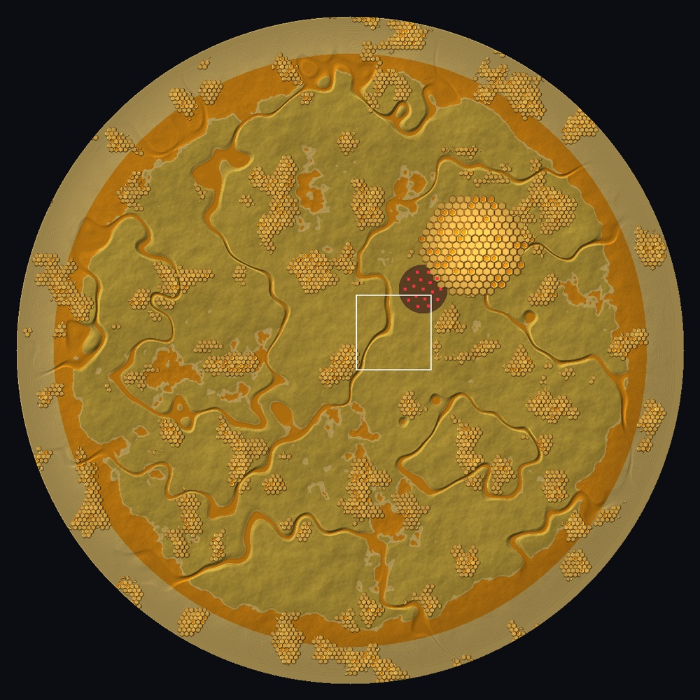<figcaption><strong>Amber Reach</strong>, the proof's real terrain from above. The white square is the size of today's gate floor.</figcaption></figure>
    <figure>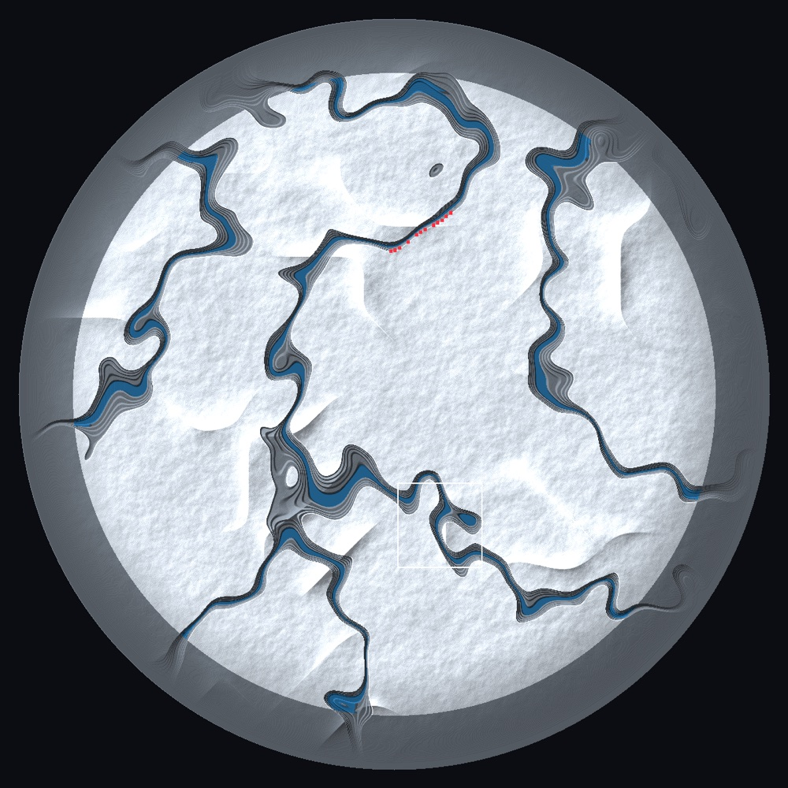<figcaption><strong>Cold Rift</strong>, same scale. The red dashes are the hanging monastery on the gorge's edge.</figcaption></figure>
  </div>
  <div class="pair" style="margin-top:14px;grid-template-columns:repeat(auto-fit,minmax(min(100%,300px),1fr))">
    <figure><figcaption><strong>Amber, by the river.</strong> The comb you can see from far off.</figcaption></figure>
    <figure>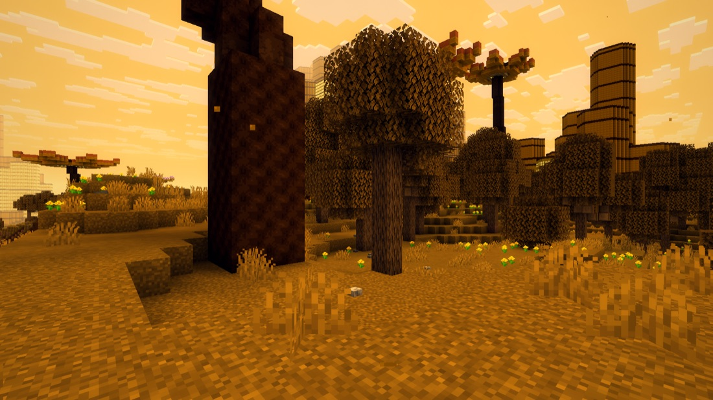<figcaption><strong>Amber, on the ground.</strong> Trees, grass, flowers and your Soft Land pebbles, with no extra work.</figcaption></figure>
    <figure>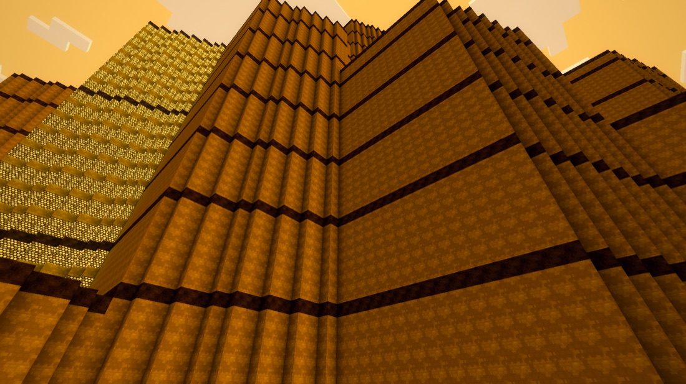<figcaption><strong>The foot of the comb.</strong> Scale works. The surface is plainly a placeholder.</figcaption></figure>
    <figure>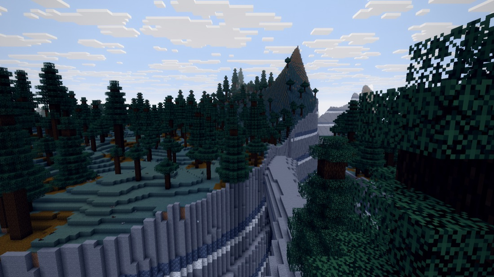<figcaption><strong>Cold Rift.</strong> A completely different land, from the same engine.</figcaption></figure>
    <figure>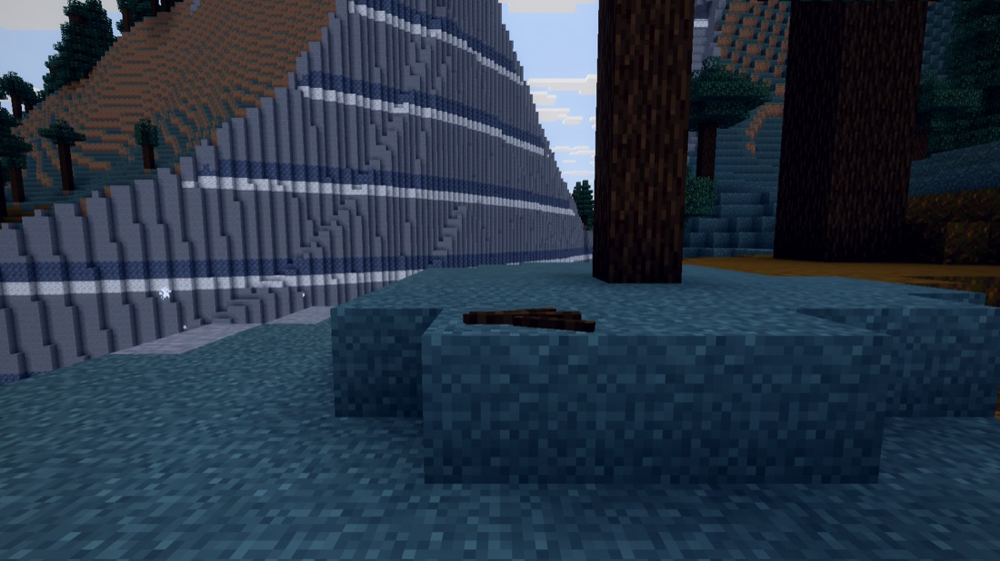<figcaption><strong>The gorge wall,</strong> layered rock, and a twig in the foreground.</figcaption></figure>
    <figure>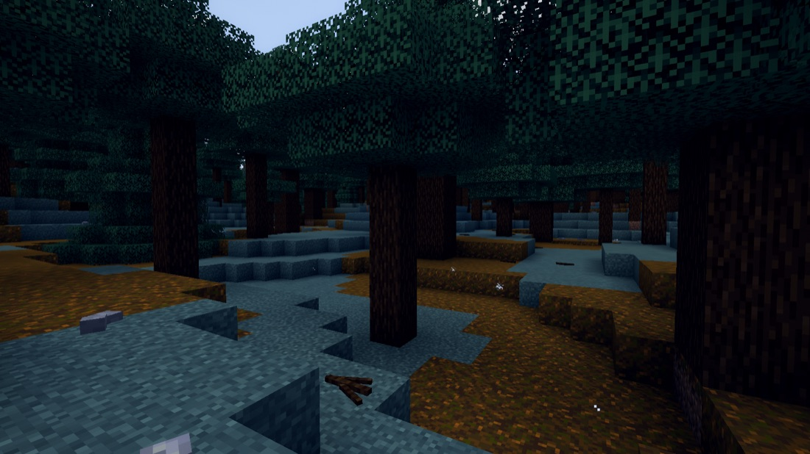<figcaption><strong>The forest floor.</strong> Twigs and stones, like the overworld.</figcaption></figure>
  </div>
  <p class="key" style="max-width:720px;margin-top:10px">Real game, GitHub's Mac, default look settings. No animals, people or finished art. Judge the space and the feel of the ground, not the polish.</p>
</div>
<div class="col">
  <h3>What the numbers came out as</h3>
  <p>Every land was measured the same way, over a window the size of today's gate floor. <span class="t">Measured</span></p>
  <div class="tw"><table class="mt">
    <thead><tr><th>Measure</th><th class="n">Gates today</th><th class="n">Overworld</th><th class="n">Amber proof</th><th class="n">Cold Rift proof</th></tr></thead><tbody>
    <tr><td>Typical sight at eye level</td><td class="n">6</td><td class="n">32</td><td class="n">28</td><td class="n">32</td></tr>
    <tr><td>Far sight (90th percentile)</td><td class="n">19</td><td class="n">156</td><td class="n">148</td><td class="n">156</td></tr>
    <tr><td>Views that reach 64+ blocks</td><td class="n">0%</td><td class="n">40%</td><td class="n">35%</td><td class="n">39%</td></tr>
    <tr><td>Height of the land, low to high</td><td class="n">5</td><td class="n">46</td><td class="n">78</td><td class="n">113</td></tr>
    <tr><td>Time to make a chunk, real game</td><td class="n">not comparable</td><td class="n">55 to 93 ms</td><td class="n">12 ms</td><td class="n">14 ms</td></tr>
    <tr><td>Disk for the same 1,296 chunks</td><td class="n"></td><td class="n">7 to 11 MB</td><td class="n">4.5 MB</td><td class="n">5.5 MB</td></tr>
  </tbody></table></div>
  <p>So on open views the rough proof already matches the default overworld, and it has more height. (That's the game with no terrain pack. Your pack's Tectonic land is taller, so treat 46 as a floor.) Chunks cost about a fifth of the overworld's. Take that with care: the proof has no structures, mobs or villages yet, so finished Realms will cost more, and these timings are from GitHub's Mac, not yours. What it does say is that there's room to spend. At the proof's density a fully walked E Realm is about 7 to 8 MB of land; your whole gates dimension today is 36 MB.</p>
  <h3>What the proof does and doesn't show</h3>
  <dl class="ch">
    <dt>It shows</dt><dd>A whole land as one piece works in the real game. Height functions plus clipped set pieces make chunks at the speed above. The game's real ground and plant pipeline runs in our own dimension. Views, height and sheer size all clear the targets. The reach test found real faults on its first run: rivers cut Amber into pieces (27% reachable without swimming), and Cold Rift needs 2-block steps to reach 99.8%. That's what the test is for, and real Realms must pass it.</dd>
    <dt>It doesn't</dt><dd>That a Realm is fun. That fights work in the open. That villages, animals or the physical rule feel good. Whether a Realm looks premium, because this one doesn't try to. Frame rate on your 4K screen with Lens on. All of that is for phase 2, and you.</dd>
  </dl>
</div>
</section>

<section id="s6"><div class="col">
  <p class="no">6</p>
  <h2>Testing and building it</h2>
  <h3>Targets</h3>
</div>
<div class="wide"><div class="tw"><table class="mt">
  <thead><tr><th>Measure</th><th class="n">Today</th><th class="n">Every Realm must</th></tr></thead><tbody>
  <tr><td>Typical sight at eye level</td><td class="n">6</td><td class="n">30 or more</td></tr>
  <tr><td>Far sight (90th percentile)</td><td class="n">19</td><td class="n">150 or more</td></tr>
  <tr><td>Views that reach 64+ blocks</td><td class="n">0%</td><td class="n">30% or more</td></tr>
  <tr><td>Height of the land, low to high (5th to 95th percentile)</td><td class="n">5</td><td class="n">60 or more</td></tr>
  <tr><td>Height gained on the way to the heart</td><td class="n">3</td><td class="n">40 or more</td></tr>
  <tr><td>Outdoor walking in ways 7 wide or less</td><td class="n">66%</td><td class="n">15% or less</td></tr>
  <tr><td>Doors walked twice (Delves)</td><td class="n">21%</td><td class="n">5% or less</td></tr>
  <tr><td>Land reachable with that rank's movement</td><td class="n">n/a</td><td class="n">100%</td></tr>
  <tr><td>Chunk cost and frame rate against the overworld</td><td class="n">n/a</td><td class="n">within 10%</td></tr>
  <tr><td>Ground detail against the overworld</td><td class="n">none</td><td class="n">80% or more</td></tr>
  <tr><td>Repeats, 10,000 simulated players</td><td class="n">common</td><td class="n">none until the bag is empty</td></tr>
  <tr><td>Any two Realms differ</td><td class="n">n/a</td><td class="n">on 4 of 6 things</td></tr>
  <tr><td>Everything else (Provings, Ritual, story gates, old saves, bells, Satchel)</td><td class="n">pass</td><td class="n">still pass</td></tr>
  <tr><td>You play it</td><td class="n"></td><td class="n">you say yes</td></tr>
</tbody></table></div></div>
<div class="col">
  <h3>Order of work</h3>
  <p>Estimates are at machine pace, scaled from what's actually been built here: Gate Worlds was about 34 commits over 28 to 30 October for 90 worlds, and all 41 bosses reached the Forge bar in about two days. Your playing is the slow part, and it's the part that matters.</p>
</div>
<div class="wide"><div class="tw"><table class="mt">
  <thead><tr><th style="width:6%"></th><th>What</th><th>Time</th><th>Gate to pass</th></tr></thead><tbody>
  <tr><th>0</th><td>The repeat fix, on today's gates</td><td>Hours</td><td>No repeats in 10,000 simulated runs</td></tr>
  <tr><th>1</th><td>Foundation behind a switch: generator, plan, dimensions, Mouth, ground, wildness, tests</td><td>1 to 2 days</td><td>Shape targets pass; old gates untouched</td></tr>
  <tr><th>2</th><td>Amber Reach to the full bar: land, ground, life, wax-folk, great creatures, rule, Lord, sound, Lens</td><td>1 to 3 days</td><td><strong>You play it. Stop.</strong></td></tr>
  <tr><th>3</th><td>Cold Rift and Hollow Reach, to prove "completely different"</td><td>1 to 3 days</td><td><strong>You play them. Stop.</strong></td></tr>
  <tr><th>4</th><td>The E pool up to 12, switch on for new worlds</td><td>2 to 4 days</td><td>E targets pass; you sample them</td></tr>
  <tr><th>5</th><td>D to S waves, up to about 60</td><td>1 to 3 weeks</td><td>Each wave passes the difference test</td></tr>
  <tr><th>6</th><td>Old worlds recast as Delves with loops; Far Sight; 100+ later</td><td>Ongoing</td><td></td></tr>
</tbody></table></div></div>
<div class="col">
  <p><strong>Go or stop.</strong> If a pilot doesn't feel like a world to you, chunks cost over 1.5 times the overworld's, or frame rate falls more than 10% below the overworld's at the same settings, we stop and rethink before building more.</p>
  <p><strong>Rolling back.</strong> Switch <code>gateRealms</code> off and new gates roll as they do now. Old gates never change. Dependencies: the Fights That Read You work helps open-ground bosses but doesn't block this. Sound and art follow the rules already in the spec.</p>
  <h3>Biggest risks</h3>
</div>
<div class="wide"><div class="tw"><table class="mt">
  <thead><tr><th>Risk</th><th>How likely</th><th>What we do</th></tr></thead><tbody>
  <tr><td>A Realm looks fine but is dull</td><td>Medium</td><td>Pilot first, you play it, and everything else waits</td></tr>
  <tr><td>The look doesn't reach the overworld's bar</td><td>Medium</td><td>Full art on one Realm before any others; first designs bold, not reworked</td></tr>
  <tr><td>Long views hurt frame rate at 4K on Cinematic (you see 40 to 55 today)</td><td>High</td><td>Fog distance per Realm, Far Sight later, and a Mac perf run at phase 2</td></tr>
  <tr><td>Bosses built for arenas behave badly in the open</td><td>Medium</td><td>Lord arenas stay arenas; great creatures tested in pilot 1</td></tr>
  <tr><td>Scope: 60 worlds is a lot</td><td>High</td><td>Waves, a shared kit, and stops; you can end at any wave with a whole set</td></tr>
  <tr><td>Creature art per Realm becomes the bottleneck</td><td>High</td><td>Share across families, reuse the Creature Kit, and spend the art where you'll notice</td></tr>
  <tr><td>Multiplayer chunk load with parties spread out</td><td>Low now</td><td>Ordinary chunk rules, tested before any server plan</td></tr>
  <tr><td>Save size</td><td>Low</td><td>Measured, and cells erased when gates close</td></tr>
</tbody></table></div></div>
<div class="col">
  <h3>Challenging this plan</h3>
  <dl class="ch">
    <dt>A real complaint?</dt><dd>The numbers are your words made measurable. The last gate is still you playing it.</dd>
    <dt>Less work?</dt><dd>No route to remember, Waystones instead of walking back, and repeats gone.</dd>
    <dt>Something simpler?</dt><dd>The repeat fix gets its share and ships first. Two rounds show nothing cheaper gets you a world.</dd>
    <dt>Proved wrong by?</dt><dd>A pilot that still feels small, a Realm that's pretty with nothing to do, or Mac frame rates.</dd>
    <dt>When it fails?</dt><dd>It falls back to a working gate, quietly. Old gates never change.</dd>
    <dt>Can you trust it?</dt><dd>Every stage ends with shots and numbers, you play each pilot, and the switch undoes it.</dd>
    <dt>Nothing lost?</dt><dd>The same probe on the same measures, and the whole gate test suite must stay green.</dd>
  </dl>
</div>
</section>

<section id="s7"><div class="col">
  <p class="no">7</p>
  <h2>Your decisions</h2>
  <p>Yes takes the recommendation. Your answers save as you click, and a note on any line goes along with it.</p>
  <button class="bulk" id="allyes" type="button">Yes to everything still open</button>
  <p class="status" id="status" role="status">Connecting to the answers store...</p>

  <div id="decisions">
    <div class="dec" data-q="r1"><h4><span>1</span>Gates stop being floors and become Realms, one unbroken land each.</h4><p>The whole plan rests on this. Floors live on only as interiors.</p></div>
    <div class="dec" data-q="r2"><h4><span>2</span>Fix the repeats now, on today's gates, ahead of everything else.</h4><p>A few hours, on its own. You'd feel it on your next new world.</p></div>
    <div class="dec" data-q="r3"><h4><span>3</span>Realm sizes grow with rank: E 800 across up to S 2,400 and Sovereign 3,000.</h4><p>Big enough to feel like a place at E, and an hour's walk at S. We can tune it after the pilots.</p></div>
    <div class="dec" data-q="r4"><h4><span>4</span>Realms have their own non-human people and villages.</h4><p>They'd trade and you'd overhear them, with their speech carried by the System. No allies, no quests, no directions. The alternative is empty villages. This is the one that leans hardest on your rule about people outside Carillon, since these are other worlds, not ours.</p></div>
    <div class="dec" data-q="r5"><h4><span>5</span>One great landmark in sight from where you arrive, and three to five great creatures in any order that open the way to the Lord, never announced.</h4><p>This replaces the route. You could say instead that the way should stay open from the start.</p></div>
    <div class="dec" data-q="r6"><h4><span>6</span>Waystones replace Rest Shrines, carry you between ones you've reached, and bank your Satchel.</h4><p>An hour's run shouldn't be lost to one death. Tradeoff: it softens the Satchel's risk. Answer no if you want the stake to last the whole Realm.</p></div>
    <div class="dec" data-q="r7"><h4><span>7</span>Each Realm has one physical rule of its own: tide, cold, wind, updrafts, moving land and so on.</h4><p>That's what makes you play them differently, not just see them differently.</p></div>
    <div class="dec" data-q="r8"><h4><span>8</span>Each Realm is authored as its own blueprint, with seeds changing the details, rather than endlessly generated.</h4><p>It's how "completely different" stays true. Generated-only is what got us the oatmeal.</p></div>
    <div class="dec" data-q="r9"><h4><span>9</span>Build in order: Amber Reach first and stop for you to play it, then Cold Rift and Hollow Reach and stop again.</h4><p>Nothing past the first pilot gets built until you've said it feels like a world.</p></div>
    <div class="dec" data-q="r10"><h4><span>10</span>Aim for 12 Realms at E, about 60 at launch, 100+ over time.</h4><p>Each wave is complete on its own, so we can stop at any point.</p></div>
    <div class="dec" data-q="r11"><h4><span>11</span>Today's 90 worlds get recast as Delves inside Realms, rebuilt with loops and shortcuts.</h4><p>So none of that work is wasted. Some recipes won't fit and get cut.</p></div>
    <div class="dec" data-q="r12"><h4><span>12</span>Far Sight comes to Realms after the pilots, not before.</h4><p>Long views will matter most in Realms. It's a separate piece of work, so the pilots shouldn't wait for it.</p></div>
    <div class="dec" data-q="r13"><h4><span>13</span>Existing gates stay exactly as they are, and Realms sit behind a switch until the E wave is ready.</h4><p>Safe for your saves. It also means you only meet Realms when there are enough of them, apart from the pilots you test.</p></div>
    <div class="dec" data-q="r14"><h4><span>14</span>The 15 themes become families, and new families are allowed.</h4><p>Loot, bosses and mastery keep working by family, and new Realms don't have to fit an old theme.</p></div>
  </div>
  <p class="end">Source of this plan: <code>docs/gates-as-worlds/</code> on branch <code>claude/gates-as-worlds-plan-fcb81b</code>. Nothing here is in production. The proof code is on a throwaway branch that never merges.</p>
</div></section>
</main>

<script>
(() => {
  const statusEl = document.getElementById('status');
  const cards = [...document.querySelectorAll('.dec[data-q]')];
  const answers = {};
  let db = null;

  for (const card of cards) {
    const row = document.createElement('div');
    row.className = 'ans';
    row.innerHTML = '<button type="button" data-a="yes" aria-pressed="false">Yes</button><button type="button" data-a="no" aria-pressed="false">No</button><input type="text" placeholder="Note (optional)" aria-label="Note for decision ' + card.dataset.q.slice(1) + '" maxlength="400">';
    card.appendChild(row);
    row.querySelectorAll('button').forEach(b => b.addEventListener('click', () => choose(card.dataset.q, b.dataset.a)));
    row.querySelector('input').addEventListener('change', e => note(card.dataset.q, e.target.value));
  }

  function paint() {
    let done = 0;
    for (const card of cards) {
      const a = answers[card.dataset.q] || {};
      if (a.answer) done++;
      card.querySelectorAll('button[data-a]').forEach(b => b.setAttribute('aria-pressed', String(a.answer === b.dataset.a)));
      const input = card.querySelector('input');
      if (document.activeElement !== input) input.value = a.note || '';
    }
    say((db ? 'Saved. ' : 'Not saving on this view: tell Claude your answers in chat. ') + done + ' of ' + cards.length + ' answered.');
  }
  function say(t) { statusEl.textContent = t; }

  async function write(q) {
    answers[q].at = new Date().toISOString();
    if (!db) return paint();
    try { await db.doc('answers/' + q).set(answers[q]); }
    catch (e) { say('That one didn’t save (' + (e && e.code || 'error') + '). Try again, or tell Claude in chat.'); }
  }
  function choose(q, a) {
    answers[q] = Object.assign({}, answers[q], { answer: answers[q] && answers[q].answer === a ? null : a });
    paint();
    write(q);
  }
  function note(q, text) {
    answers[q] = Object.assign({}, answers[q], { note: text.trim() });
    write(q);
  }
  document.getElementById('allyes').addEventListener('click', async () => {
    for (const card of cards) {
      const q = card.dataset.q;
      if (!(answers[q] && answers[q].answer)) {
        answers[q] = Object.assign({}, answers[q], { answer: 'yes' });
        paint();
        await write(q);
      }
    }
  });

  const timer = setTimeout(() => { if (!db) paint(); }, 10000);
  paint();
  say('Connecting to the answers store...');
  Promise.resolve(window.claude && window.claude.use ? window.claude.use('db') : null).then(found => {
    clearTimeout(timer);
    db = found;
    if (!db) { paint(); return; }
    db.collection('answers').onSnapshot(snap => {
      for (const d of snap.docs) answers[d.id] = d.data();
      paint();
    }, () => say('Lost the connection to the answers store. Reload, or tell Claude your answers in chat.'));
  }).catch(() => { clearTimeout(timer); paint(); });
})();
</script>
